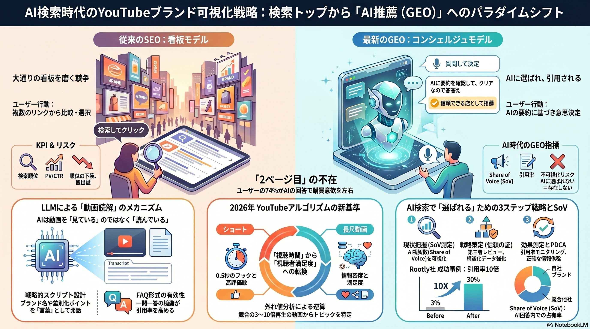

YouTubeを最強の検索資産へと変革する
パラダイムシフトと戦略的プレイブック
ユーザーの情報探索は「Search & Click」から「Ask & Decide」へ。AIコンシェルジュに推薦されないブランドは、市場から"消える"時代が始まりました。

| 項目 | 従来のSEO | AI時代のGEO |
|---|---|---|
| 主目的 | 検索順位の最大化 | AI回答への引用獲得 |
| 焦点 | キーワード一致・被リンク | 検索意図の満足度 |
| 技術 | ドメイン強度・メタデータ | NLO・構造化データ |
| KPI | 検索順位・PV | SoV・ブランド引用率 |
| リスク | 順位の下落 | 不可視化（存在の抹消） |
「視聴時間」から「満足度」へ。ショートと長尺が完全分離され、AIは動画を「見る」のではなく文字を「読んで」いる。
ターゲットはモバイル視聴。最初の0.5秒のフック、高評価数、スワイプ率が重要KPI。再生回数と高評価の相関係数は0.83と非常に高く、瞬間的なインパクトが勝負を分けます。
ターゲットはリビングのテレビ視聴。検索意図の満足度スコアとセッション深度が重要KPI。無駄な引き延ばしを排除し、価値密度の高い結論を提示する戦略が求められます。
AIは動画を「見ている」のではなく、トランスクリプト（字幕テキスト）を「読んでいる」。Google AI OverviewsにおけるYouTube動画の引用増加率は414%。映像でしか語られていないブランドはAIにとって存在しません。
Rootly社はSEOで勝っていたがAIに推薦されなかった。自己PRを捨て、第三者レビューと技術ドキュメントを強化した結果、SoVが3%→30%に急増。
AIの「嘘」からブランドを守る — 静的な公開から、AIへ正しい事実を供給する能動的な情報デリバリーへ。
質問と回答のペアを明示し、AIの推測を排除
客観的証拠の提示で信頼性を確保
製品仕様・価格の正確な供給
AIコンシェルジュに選ばれるための具体的アクションプラン。
競合チャンネルを5〜10個選定
直近50本の平均再生回数を算出
平均の3〜10倍の「外れ値」動画を特定
フック、尺、フォーマットの共通パターンを解読
発見したパターンに自社の独自視点を掛け合わせる
Veo 3でショート動画生成、AIリップシンク、BGM自動提案
0.5秒の視覚フック、情緒的な「間」、ABテストによるクリック率最大化
主要プロンプトでの自社と競合のSoV差を特定
AIが参照しているソース（動画スクリプト等）を特定
構造化データとFAQを実装し、推奨枠を奪取
今日から始められるアクション。進捗をチェックしながら、AI検索時代への対応を一歩ずつ進めましょう。
動画解説、音声コンテンツ、詳細レポートをこちらからご覧いただけます。
パラダイムシフトの全体像を動画で解説
AI検索動画スクリプト 音声版
移動中にも聴けるオーディオコンテンツ
2026年、私たちが向き合うべき顧客は人間だけではありません。情報の門番となったAIに自社を正しく認識させ、推奨させること。ブランドを真に信頼されるデジタル資産へとアップデートする時が来ました。